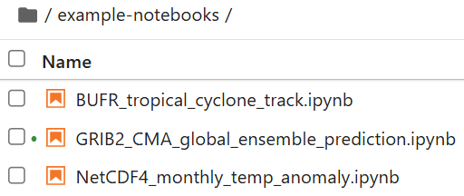
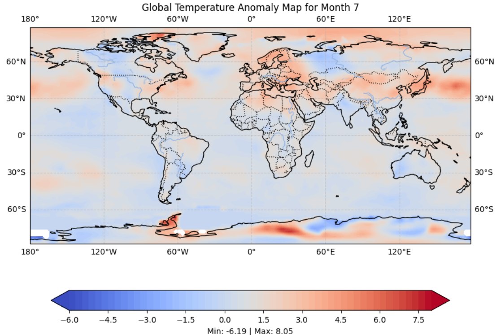

Decoding data from WMO binary formats
Learning outcomes!
By the end of this practical session, you will be able to:
- run a Docker container for the "demo-decode-eccodes-jupyter" image
- run the example Jupyter notebooks to decode data in GRIB2, NetCDF and BUFR formats
- learn about other tools to decode and visualize WMO table driven code form (TDCF) formats
Introduction
WMO binary formats such as BUFR and GRIB are widely used in the meteorological community for the exchange of observational and model data, and typically require specialized tools to decode and visualize the data.
After downloading data from WIS2 you will often need to decode the data to make further use of it.
Various code libraries are available to write scripts or programs to decode WMO binary formats. There are also tools available that provide a user interface to decode and visualize the data without the need to write a software program.
In this practical session, we demonstrate how to decode 3 different types of data using a Jupyter notebook:
- GRIB2 containing data for a Global Ensemble Prediction as made by the CMA Global Regional Assimilation PrEdiction System (GRAPES)
- BUFR containing tropical cyclone track data from the ECMWF ensemble forecasting system
- NetCDF containing data for monthly temperature anomalies
Decoding downloaded data in a Jupyter notebook
In order to demonstrate how you can decode the downloaded data, we will start a new container using 'decode-bufr-jupyter' image.
This container will be start Jupyter notebook server on your instance which includes the ecCodes library that you can use to decode BUFR data.
We will use the example notebooks included in ~/exercise-materials/notebook-examples to decode the downloaded data for the cyclone tracks.
To start the container, use the following command:
docker run -d --name demo-decode-eccodes-jupyter \
-v ~/wis2box-data/downloads:/root/downloads \
-p 8888:8888 \
-e JUPYTER_TOKEN=dataismagic! \
ghcr.io/wmo-im/wmo-im/demo-decode-eccodes-jupyter:latest
Here is a breakdown of the above command:
docker run -d --name demo-decode-eccodes-jupyterstarts a new container in detached mode (-d) and names itdemo-decode-eccodes-jupyter-v ~/wis2box-data/downloads:/root/downloadsmounts the~/wis2box-data/downloadsdirectory on your VM to/root/downloadsin the container. This is where the data you downloaded from WIS2 is stored-p 8888:8888maps port 8888 on your VM to port 8888 in the container. This makes the Jupyter notebook server accessible from your web browser athttp://YOUR-HOST:8888-e JUPYTER_TOKEN=dataismagic!sets the token required to access the Jupyter notebook server. You will need to provide this token when you access the server from your web browserghrc.io/wmo-im/demo-decode-eccodes-jupyter:latestspecifies the image used by the container which pre-includes the example Jupyter notebooks used in the next exercises
About the demo-decode-eccodes-jupyter image
The demo-decode-eccodes-jupyter is image developed for this training that uses a base image including the ecCodes library and adds a Jupyter notebook server, as well as Python packages for data analysis and visualization.
The source code for this image, including the example notebooks, can be found at wmo-im/demo-decode-eccodes-jupyter.
Once the container is started, you can access the Jupyter notebook server on your student VM by navigating to http://YOUR-HOST:8888 in your web browser.
You will see a screen requesting you to enter a "Password or token".
Provide the token dataismagic! to login to the Jupyter notebook server (unless you used a different token in the command above).
After you login, you should see the following screen listing the directories in the container:

Double click on the example-notebooks directory to open it. You should see the following screen listing the example notebooks

You can now open the example notebooks to decode the downloaded data.
GRIB2 decoding example: GEPS data from CMA GRAPES
Open the file GRIB2_CMA_global_ensemble_prediction.ipynb in the example-notebooks directory:

Read the instructions in the notebook and run the cells to decode the downloaded data for the global ensemble prediction. Run each cell by clicking on the cell and then clicking the run button in the toolbar or by pressing Shift+Enter.
After you execute all cells, you should see a visualization for "Probability of 850hPa temperature anomaly below -1.5 standard deviations"

Question
How would you update the visualization in this notebook to visualize one of the other messages in the GRIB2 File ?
Click to reveal answer
In the last cell of the notebook, you will see the following code:
# show visualization for message number 8 (Probability of 850hPa temperature anomaly below -1.5 standard deviations)
show_map_visualization(grib_file, 8)
You can change this line or add another line to visualize one of the other messages in the GRIB2 file by changing the message number:
# show visualization for message number 9
show_map_visualization(grib_file, 9)
Then re-run the cells in the notebook to see the updated plot.
BUFR decoding example: Tropical cyclone tracks
Open the file BUFR_tropical_cyclone_track.ipynb in the example-notebooks directory:

Read the instructions in the notebook and run the cells to decode the downloaded data for the tropical cyclone tracks. Run each cell by clicking on the cell and then clicking the run button in the toolbar or by pressing Shift+Enter.
At the end you should see a plot of the strike probability for the tropical cyclone tracks:

Question
The result displays the predicted probability of tropical storm track within 200 km. How would you update the notebook to display the predicted probability of tropical storm track within 300 km?
Click to reveal answer
To update the notebook to display the predicted probability of tropical storm track within a different distance, you can update the distance_threshold variable in the code block that calculates the strike probability.
To display the predicted probability of tropical storm track within 300 km,:
# set distance threshold (meters)
distance_threshold = 300000 # 300 km in meters
Then re-run the cells in the notebook to see the updated plot.
Decoding BUFR data
The exercise you just did provided one specific example of how you can decode BUFR data using the ecCodes library. Different data types may require different decoding steps and you may need to refer to the documentation for the data type you are working with.
For more information please consult the ecCodes documentation.
NetCDF decoding example: Monthly temperature anomalies
Open the file NetCDF4_monthly_temperature_anomaly.ipynb in the example-notebooks directory:

Read the instructions in the notebook and run the cells to decode the downloaded data for the monthly temperature anomalies. Run each cell by clicking on the cell and then clicking the run button in the toolbar or by pressing Shift+Enter.
At the end you should see a map of the temperature anomalies:

Decoding NetCDF data
NetCDF is a flexible format which in this example reported the values for the variable 'anomaly' reported along the 'lat', 'lon' dimensions. Different NetCDF datasets can use different variable names and dimensions.
Using other tools to view and decode WMO binary formats
The example notebooks demonstrated how you can decode commonly used WMO binary formats using Python.
You can also use other tools to decode and visualize WMO table driven code form formats without the need to write software, such as:
- Panoply - a cross-platform application that plots geo-referenced and other arrays from NetCDF, HDF, GRIB, and other datasets
- ECMWF Metview - a meteorological application for data analysis and visualization, which supports GRIB and BUFR formats
- Integrated Data Viewer (IDV) - a free Java-based software framework for analyzing and visualizing geoscience data, including support for GRIB and NetCDF formats
Conclusion
Congratulations!
In this practical session, you learned how to:
- run a Docker container for the "demo-decode-eccodes-jupyter" image
- run the example Jupyter notebooks to decode data in GRIB2, NetCDF and BUFR formats